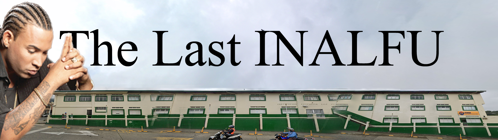
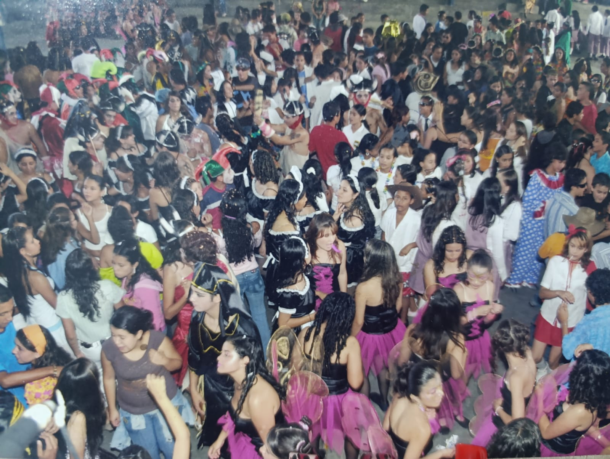

“Todavía no sabemos si fue culpa de filosofía o de Ares, pero ese PC nunca volvió a ser el mismo.”
Recuerdo del parche

Sobre el encuentro
20 años después
Eran los días en que el reggaetón aún era un tabú. Nosotros ya habíamos sobrevivido al cambio de milenio y a los Ovnis de Sipirra; a las Torres Gemelas y al guarapo; al cariño de Don Javier y a la balacera de la peatonal. Sobrevivimos a las identidades trigonométricas de Alba Lucía y hasta a las arepas con mortadela de Maira.
Buscábamos superar la selección natural mejorando el quiebre de cadera, cantando Ella y Yo como si nos estuviera pasando: “tú y ella en una cama, allá en Bonafont”. Queríamos aprender, pero sobre todo quemar los cartuchos de la juventud. En física nos dijeron que el amor no existe, pero en química nos volvió la duda. Gracias a la profe de filosofía abrimos el primer correo, solo para llenar el PC de virus bajando canciones en Ares y flowhot.net.
Nos dábamos duro, como el cabezazo de Zidane a Materazzi. Éramos unos pubertos con ganas de comernos el mundo, sin saber que seríamos la última promoción de la historia del INALFU. Hoy, aunque seamos más unos tíos chavorucos casi cuarentones, nos convocamos para celebrar que compartimos esa etapa.
¡Bienvenidos a la fiesta!

Invitados
Esta es una fiesta incluyente, no sólo abarca a quienes nos graduamos formalmente, sino también a quienes se graduaron por ventanilla, a quienes fueron reclutados por el ejército y no pudieron asistir al grado, a quienes se pasaron a la nocturna en 10° u 11°, a los que perdieron el año, y quienes fueron muy cercanos a nuestra promoción, y no se graduaron con nosotros. Incluso queremos convocar profesores.
Galería
#sendnudes
Añade a la lista de reproducción oficial del encuentro, esos temas que no pueden faltar

Evento
Prográmense desde la tarde, porque habrá misa 🙏, desfile👩🏼🎓, cena como si fuera la tienda del colegio 🤍💚, fiesta tipo miniTK🎉, música en vivo 🕺🏼, invitados especiales💞 y mucho más
anímesen
Para honrar y recordar a los que ya no están y agradecer por este reencuentro.
Encuentro previsto después del final de la tarde. Según las confirmaciones intentaremos buscar el lugar que más se adapte al aforo.
Cronograma del día: en preparación. Seguí las novedades en WhatsApp.
Dirección y referencias se publicarán cuando esté cerrado el plan del encuentro.
Anécdotas
envíen esas historias inmortales que tengan de esos dosmiles, para compartir la alegría, jocosidad y nostalgia
envía tu historia escrita o en nota de voz para ir nutriendo esta sección — WhatsApp
“Todavía no sabemos si fue culpa de filosofía o de Ares, pero ese PC nunca volvió a ser el mismo.”
Recuerdo del parche
“Veinte años después seguimos preguntándonos si el amor existía en física o solo en química.”
Otra voz del curso
“La última promoción del INALFU: un título que nadie pidió y todos cargamos con orgullo.”
Para sumar la tuya pronto
Emprendimientos
Algunos nunca se fueron, otros nunca regresaron, otros vuelven con cierta frecuencia. Aquí tendremos un espacio para conectarnos
Nombre del emprendimiento
Breve descripción del proyecto o servicio. Contacto o enlace próximamente.
Nombre del emprendimiento
Breve descripción del proyecto o servicio. Contacto o enlace próximamente.
Nombre del emprendimiento
Breve descripción del proyecto o servicio. Contacto o enlace próximamente.
Nombre del emprendimiento
Breve descripción del proyecto o servicio. Contacto o enlace próximamente.
Si llegaste hasta aquí, fijo ya estas en el grupo. Si lo tienes archivado, entra de vez en cuando a motivar las diales y participa para cuadrar fechas, lugares, misa, fiesta y todo sobre el encuentro de The Last INALFU.